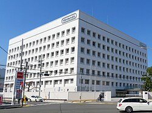

Nintendo Co., Ltd.[c] is a Japanese multinational video game company headquartered in Kyoto. It develops, publishes, and releases both video games and video game consoles. The history of Nintendo began when craftsman Fusajiro Yamauchi founded the company to produce handmade hanafuda playing cards. After venturing into various lines of business and becoming a public company, Nintendo began producing toys in the 1960s, and later video games. Nintendo developed its first arcade games in the 1970s, and distributed its first system, the Color TV-Game in 1977. The company became internationally dominant in the 1980s after the arcade release of Donkey Kong (1981) and the Nintendo Entertainment System, which launched outside of Japan alongside Super Mario Bros. in 1985.
